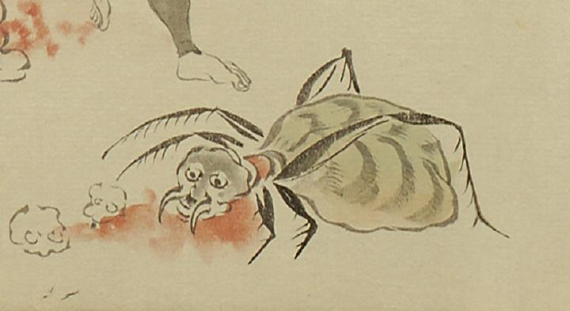

蜘蛛の化物。頭は歪み、丸い目玉が付き、口の左右から長い牙のようなものが飛出ている。胴体は頭部に比べて大きく縞模様がついている。足は左右に3本ずつ描かれており、真ん中で折れて、脛節は棘のように枝分かれしている。頭部と胴体の継ぎ目から血が出ており、流れた血の中に髑髏が2つ転がっている。
出典：親書誌：U426_nichibunken_0056：土蜘蛛草紙；ツチグモソウシ／日付：2007／資源識別子：U426_nichibunken_0056_0007_0004
Copyright (c)2010- International Research Center for Japanese Studies, Kyoto, Japan. All rights reserved.